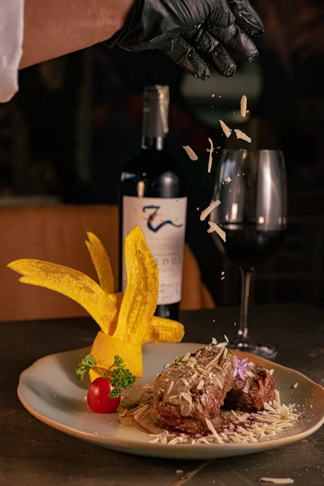
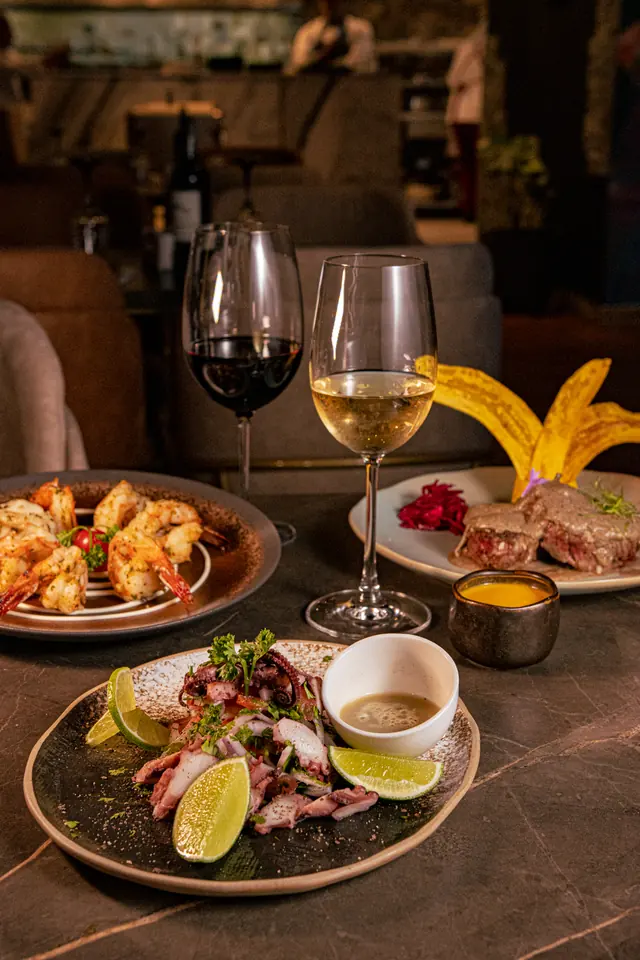
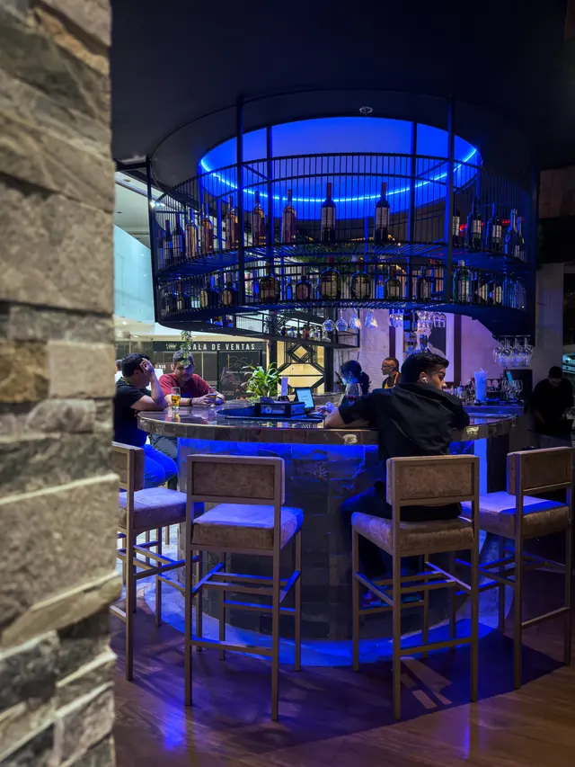
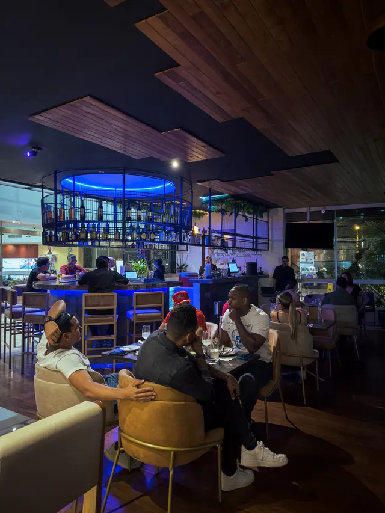

Fuego
Cortes preparados al carbón y servidos directamente en la mesa.

Restaurante · Rodizio · Bar
Cortes al carbón servidos en mesa, vinos y coctelería en un espacio íntimo junto al Hotel Spiwak y Chipichape.
La experiencia Do Sul
Do Sul reúne el ritual del rodizio, la cocina al carbón y la hospitalidad de un restaurante íntimo pensado para compartir alrededor de la mesa.
Madera, piedra y vegetación acompañan una propuesta de carnes, platos, vinos y coctelería en el hall del Hotel Spiwak.
Conocer la propuesta gastronómica
Cortes preparados al carbón y servidos directamente en la mesa.
Madera, piedra y vegetación construyen un ambiente cálido y natural.
Un espacio cercano para cenas, celebraciones y conversaciones sin prisa.


El espacio
Do Sul ofrece un ambiente cercano y acogedor, con atención personal para encuentros especiales.
Celebraciones
Cumpleaños, aniversarios, grados, encuentros familiares y cenas empresariales en un espacio íntimo junto a Chipichape.
Consultar disponibilidadContacto y ubicación
Estamos junto al Centro Comercial Chipichape, en el norte de Cali.
Avenida 6D Norte #36N-18
Hotel Spiwak · Cali